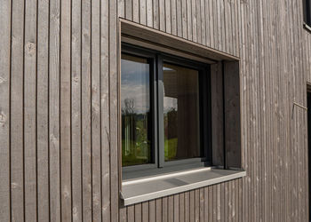
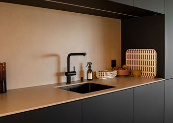
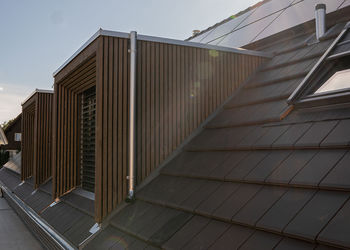

Fritschi + Griesemer AGGüttingen / Kreuzlingen
Wir denken
das Gebäude
als Ganzes.
Holzbau, Schreinerei, Bedachungen und Spenglerei - ergänzt durch Planung und Service.
Bereiche entdecken ↘BereicheVier Disziplinen.
Vier Disziplinen.
Ein Überblick.

Schreinerei
Bedachungen

Spenglerei
Rund um das Bauvorhaben
Von der Planung zum Unterhalt.
Beratung & Planung
Elementbau
Dämmung
Service & Unterhalt
Güttingen
Römerweg 17
8594 Güttingen
Kreuzlingen
Konstanzerstrasse 27
8280 Kreuzlingen
Kontakt / Güttingen · KreuzlingenFritschi + Griesemer AG
Was steht bei Ihnen an?
071 695 16 43